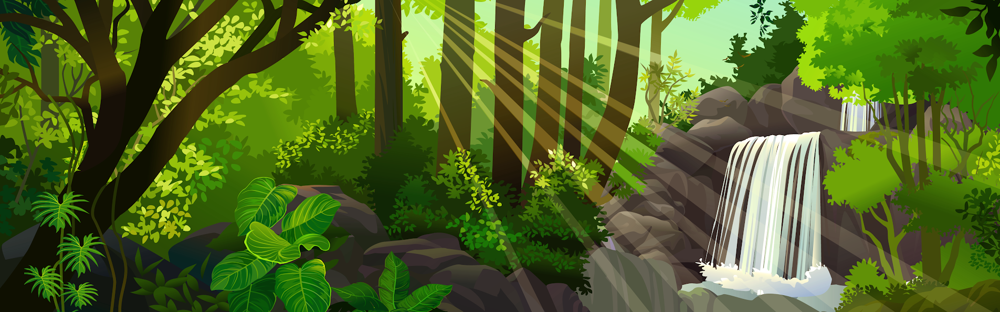

Um dia desses, dentro de um livro da biblioteca do colégio, eu descobri uma carta antiga sobre uma cidade perdida, escondida por riquezas e belezas naturais. Nessa carta, a autora deixa algumas pistas para encontrar essa cidade e eu decidi segui-las